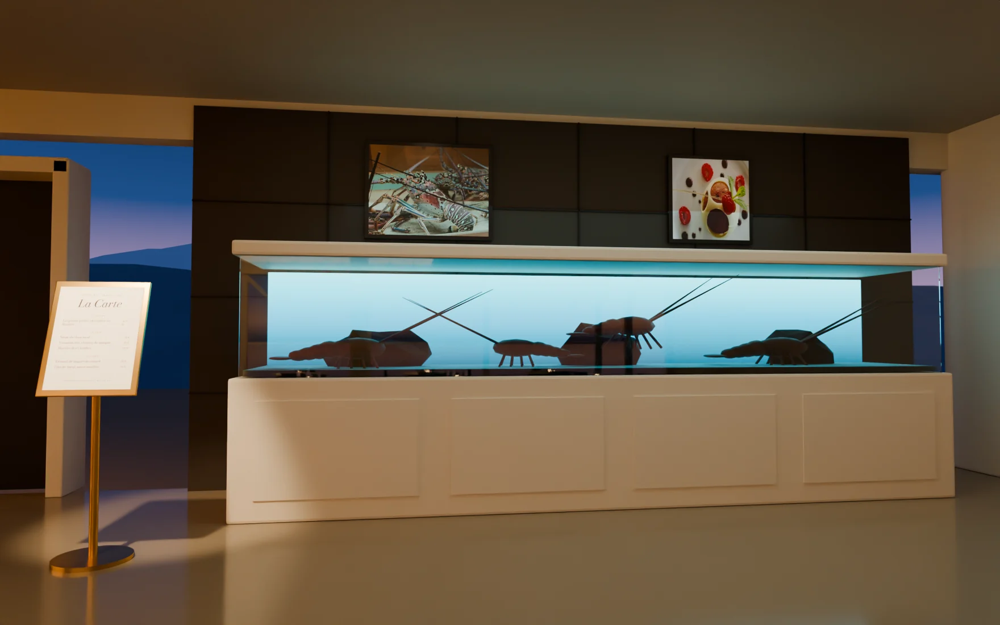
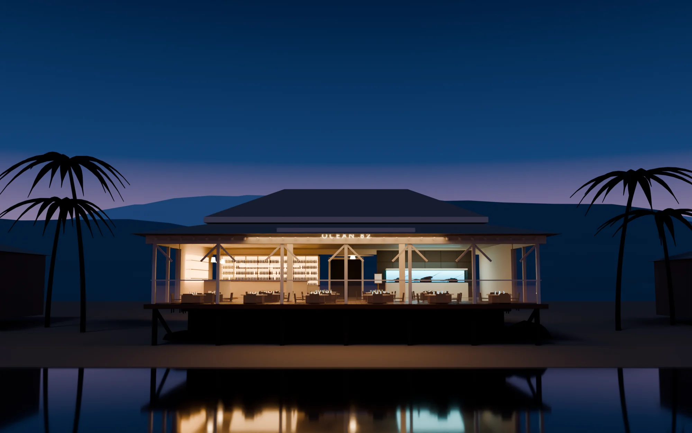

01 · Le vivier
La langouste,
choisie devant vous.
Langouste du vivier, préparée selon votre choix : grillée, thermidor ou flambée.
41 €la livre90 €le kilo
Voir la carte Réserver
La carte Le vivier
Restaurant français · Grand Case, Saint-Martin
01 · Le vivier
Langouste du vivier, préparée selon votre choix : grillée, thermidor ou flambée.
41 €la livre90 €le kilo
Voir la carte Réserver
La carte Le vivier